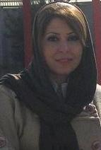

|
|

فرناز کمالی با قرار وثیقه 300 میلیون تومانی آزاد شد
چهار شنبه18 اسفند 1389
تغییر برای برابری: فرناز کمالی از فعالین کمپین یک میلیون امضا ساعت 11 شب گذشته با سپردن وثیقه 300 میلیون تومانی از زندان اوین آزاد شد. اتهام وی عضویت در کمپین یک میلیون امضا، اقدام علیه امنیت ملی، عضویت در کمپین عاطفه نبوی و شرکت در تجمعات اعتراضی عنوان شده است.
فرناز کمالی دانشجوی علوم سیاسی واحد تهران مرکز روز اول اسفند ماه 89 در حوالی خیابان 16 آذر تهران، با ضرب و شتم نیروهای امنیتی بازداشت شده و به بند 209 زندان اوین منتقل شده بود.
گفتنی است ماموران امنیتی در ایام بازداشت، خانواده وی را در رابطه با عدم هرگونه اطلاع رسانی تحت فشار گذاشته بودند. فرناز کمالی یک بار دیگر نیز در جریان اعتراضات سال گذشته بازداشت و با قید وثیقه آزاد شده بود.